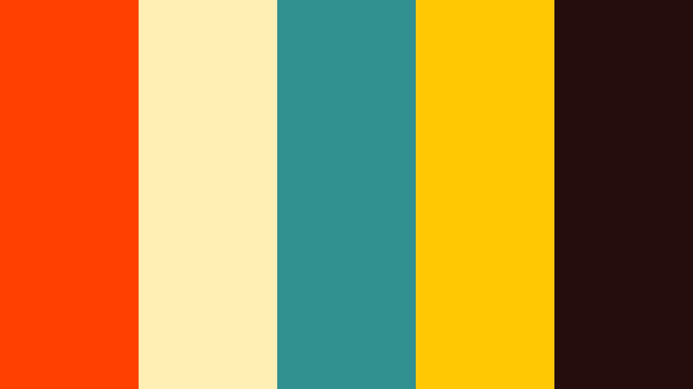

O Internacional é uma equipe com sede em Porto Alegre, capital do Rio Grande do Sul. Como dito na grande música: "Porto Alegre é longe, eu tô pegando ônibus pra te encontrar", a cidade de Porto Alegre é a maior cidade de todos os tempos. Assim, como Porto Alegre é a maior cidade, o Internacional é o maior time. Ademais, a equipe tem 2 Libertadores, 3 Brasileirões (1 invicto), 1 Copa do Brasil, mais gauchões do que o Grêmio, mais vitórias contra o Grêmio, mais títulos do que o Grêmio, mais tudo que o Grêmio. Com tudo isso garantido, o Internacional é o maior time do mundo, do Brasil e possivelmente da Via-láctea, mesmo eu sendo humilde é o que eu acho, pois isto é fato. Como um verdadeiro fã do Internacional, eu não preciso de muitas palavras para explicar por que o Inter é o maior time do mundo. É simplesmente uma questão de história, tradição e conquistas.
O Internacional foi fundado em 1909, o que significa que tem mais de 110 anos de história. Durante todo esse tempo, o clube sempre teve uma postura vencedora e competitiva. Ao longo de sua trajetória, o Inter já conquistou diversos títulos importantes, tanto a nível nacional quanto internacional. Mas o que realmente torna o Inter o maior time do mundo é a sua torcida apaixonada e fiel. Os torcedores do Inter são conhecidos por serem extremamente fanáticos e por apoiarem o time incondicionalmente em todas as situações. Além disso, a torcida colorada é uma das maiores do Brasil e do mundo, sendo capaz de lotar estádios e fazer um espetáculo à parte nas arquibancadas. Por tudo isso, eu afirmo sem medo de errar que o Internacional é o maior time do mundo. A sua história, tradição, conquistas e torcida fazem do clube um verdadeiro gigante do futebol, capaz de emocionar e inspirar milhões de pessoas ao redor do mundo. É por isso que eu sou colorado com muito orgulho e paixão!
Aqui aparecerá o código
Fiz esse desenho baseado em um desenho que fiz quando era menor. Eu o achei numa pasta antiga e resolvi fazer um código SVG para ele. Eu escolhi essa paleta de cores porque queria usar vermelho, branco e escuro. Coloquei estas cores no site paletadecores.com, o qual me recomendou as cores azul e amarelo para complementar a paleta. A paleta de cores é uma tríade de cores complementares, que são cores que combinam bem entre si. Já branco e preto são cores neutras, que combinam com qualquer outra cor. Posso dizer que gostei do resultado e que o desenho me pareceu "diferente", com um estilo mais único.
Escolhi ela pois queria usar uma paleta que tivesse vermelho e branco ao mesmo tempo. Procurando por uma paleta com vermelho e branco achei uma no site que também continha azul, amarelo e preto. Gostei da paleta e penso que as cores combinaram bem. Tentei com meu desenho usar bastantes formas diferentes, como círculos, retângulos, elipses e polígonos.
Espero que tenham gostado do site. Se ainda não clicou no escudo em SVG do Inter, clique nele agora, você vai se surpreender. Eu prometo! Tentei aprender bastante mexendo com esse site, tanto html quanto css e Javascript. Me diverti fazendo o trabalho.